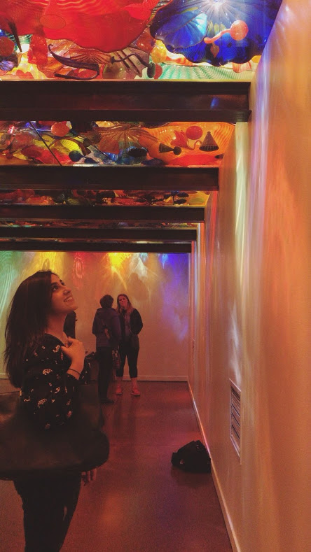
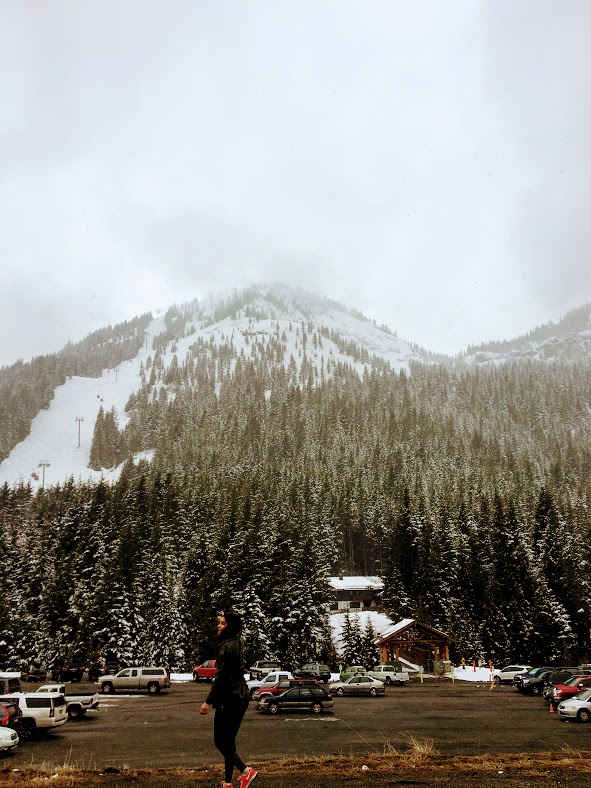

Seattle
 
It is a coffee capital after all, so let's just cut to the chase.
Even if you're not a fan of burnt-tasting Starbucks (I'm not), you have to check out the massive Reserve Roastery. This is a commercialized coffee experience like no other, and fun for a coffee flight plus a pastry. If Starbucks is simply not your taste, Victrola Coffee is pretty decent (I like the location in Capital Hill.)
About nine blocks away on Pike, you can witness fish fly. Pike Place Market is of course crowded with a surplus of tourists for what seems like all hours of the day. Nevertheless, peruse the market at least once, get a fresh bouquet of flowers, and avoid the Original Starbucks. And with the touristy things, I'll say that the Space Needle is pretty odd. But nearby the needle you can appreciate the fine art of glassblowing-- which is worth a tour. The sculptures at Chihuly Garden and Glass will blow you away. The informative tidbits from the live demo are super neat, so check this one out.
Although there's plenty to do around this techie town, I highly recommend driving out of the city to explore. Wherever you are, the beauty surrounding the mountains and ocean makes Washington one of the best places to enjoy nature and just breathe.
Tip: Plan a visit during the summer for the best weather, otherwise that Seattle rain can really put a damper on things.
Play
Grub
Ascribed to fresh, local ingredients and expert chefs, Seattle sure knows how to make food taste good.
BallardCapital Hill
Pikes Place Market